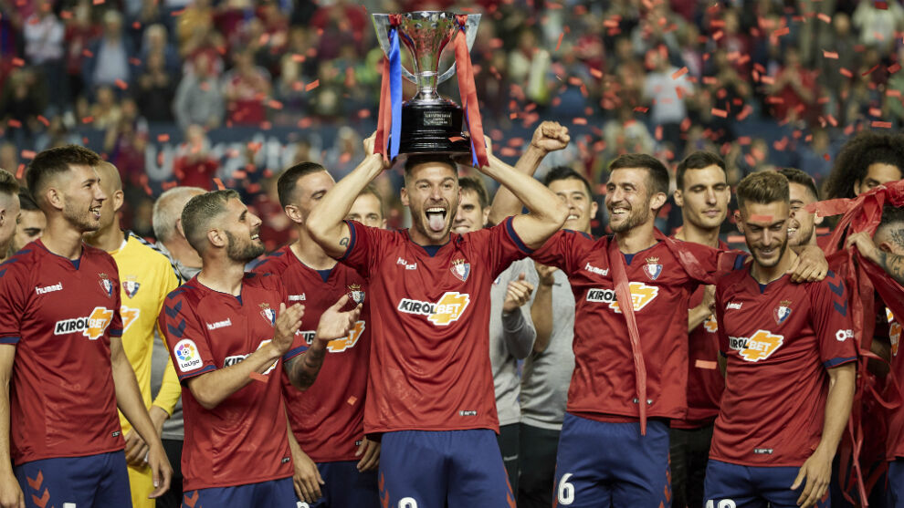
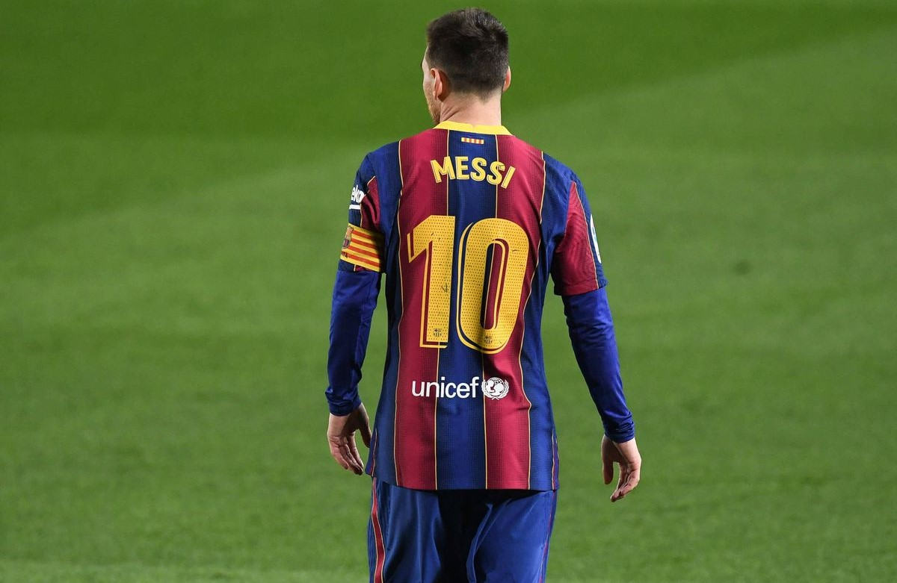
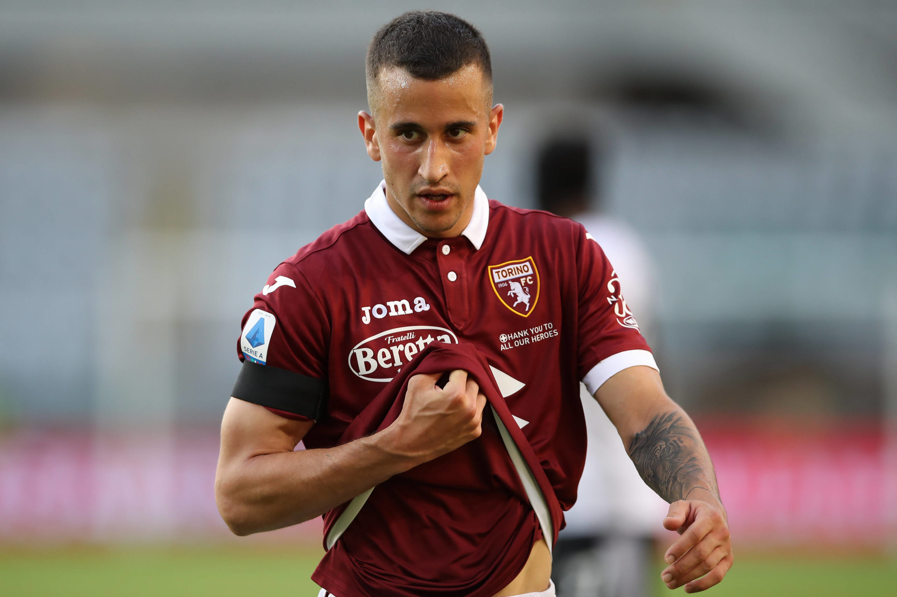

NEWS
A dream fulfilled by the rojillo club. Osasuna new champion of the Copa del Rey for the 2022/23 season. Osasuna achieved victory after beating Barcelona by two goals scored by Chimy Avila
New investigation against Real Madrid for possible referee rigging in the 2017/18 2018/19 2019/20 seasons. FIFA and the Santander League have opened an investigation against Real Madrid for possible referee theft in the Champions League

Messi could return to the Santander league. In search of new challenges. The transfer to the Navarro club is getting closer and closer. After several offers from Premier and Serie A clubs, including Barcelona, the Argentine star has decided to opt for the Navarro club.
Osasuna takes 25% of the sale of Alex Berenguer from Athletic to Torino. The red club managed to reimburse itself 10 million after the transfer of Berenguer by Athletic to the Italian club.that returns in search of challenges to Serie A tired of Athletic's philosophy.
